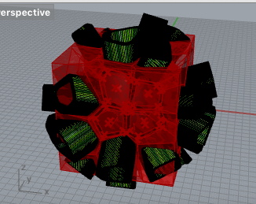

For the Self Iteration Project, we were tasked to create an object that includes a geometric pattern that represent us.
1 / 4

2 / 4

For the Grasshopper Tutorial Project, we had to manipulate the Grasshopper tools to create unique shapes.
3 / 4

For the Grasshopper 3d Print Project, we had to design a 3d printable object using the tools we had learned from Grasshopper.
4 / 4

For the Grasshopper Shapesways Project, we had to design something that would be sent to a metal 3d printing company while staying under the maximum of $100 such that the piece is 80% created by Grasshopper.